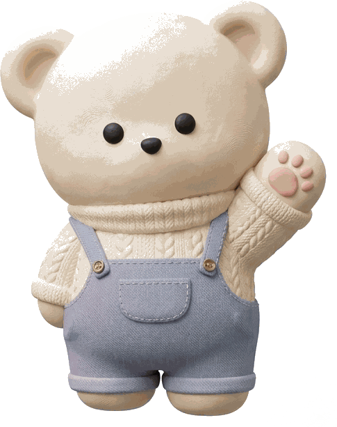

로그인해서 시작해요!
비비와 함께 영어 공부하러 가요
아이디와 비밀번호는
선생님(원장님)께 받아주세요!
안녕! 난 너의 AI 영어 친구 BIBBY(비비)야! 오늘부터 나랑 같이 핵심 패턴을 연습해보자!
오늘 배울 패턴
원하는 패턴을 선택하고 학습해봐!
문장 1 / 10
I am ~
I am happy.
나는 행복해.
비비의 발음을 듣고 3번 따라해봐!
★
★
★
마이크를 누르고 말해보세요!
학습 완료 및 평가
비비의 피드백 💬
정말 잘했어! 억양과 발음이 아주 자연스러워!